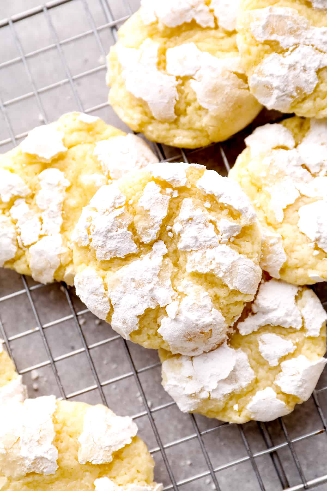

Google Butter Cookies

Description
These cookies are rich, and buttery and will be sure to please!
Ingredients
- 1/2 cup European-Style salted butter, room temperature
- 8 oz cream cheese, room temperature
- 1 1/2 cup granulated sugar
- 1 large egg
- 1 teaspoon almond extract
- 2 1/4 cups all-purpose flour
- 1/4 cup powdered sugar
- 1 tablespoon baking powder
Steps
- Preheat oven to 350 degrees F.
- In a stand mixer, beat together butter, cream cheese, and granulated sugar until smooth.
- With the mixer running, add in the egg and then the almond extract.
- In a separate bowl, stir together the flour, baking powder, and 1/4 cup of powdered sugar.
- With the mixer on low, slowly add the dry flour mixture to the already creamed mixture.
- Once smooth, remove the bowl from the mixer and cover. Place in the refrigerator for 30 minutes to chill.
- Line a large sheet pan with nonstick parchment paper. Place extra powdered sugar (for rolling) in a shallow bowl.
- Once chilled, use a 2 tablespoons cookie scoop to create cookie dough ball, immediately rolling fully in powdered sugar.
- Place on the baking sheet, 6 at a time, and bake for 10-11 minutes. When they are no longer wet on top and are firm o the sides, they are done. We prefer them on the shorter cook time so they are extra gooey!
- Allow to cool o the sheet pan for 5 minutes, and then place on a wire rack to cool completely.